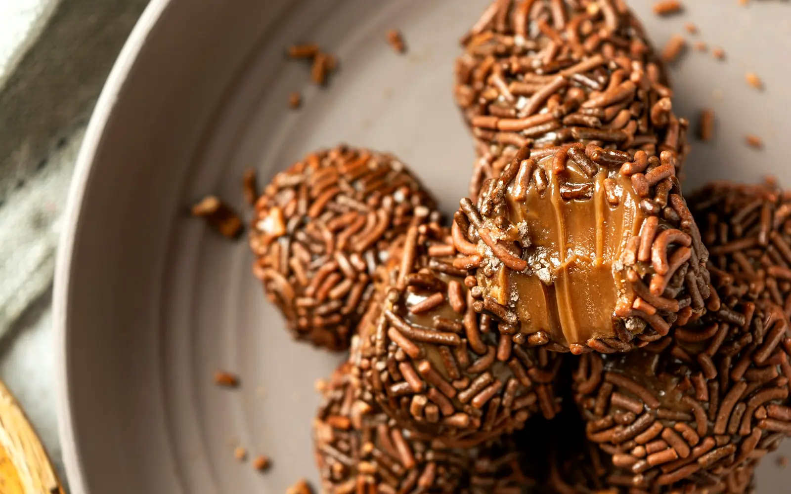

5 recipes
South America
Corn, beans and Andean grains
 VenezuelaCheese Arepas30 min · MediumWhat you needMakke ka bareek pre-cooked atta, Mozzarella cheese, MakkhanOpen recipe →
VenezuelaCheese Arepas30 min · MediumWhat you needMakke ka bareek pre-cooked atta, Mozzarella cheese, MakkhanOpen recipe → ArgentinaCheese Corn Empanadas60 min · Medium · Vegetarian versionWhat you needMaida, Makkhan, Sweet corn, Mozzarella cheese, PyaazOpen recipe →
ArgentinaCheese Corn Empanadas60 min · Medium · Vegetarian versionWhat you needMaida, Makkhan, Sweet corn, Mozzarella cheese, PyaazOpen recipe → PeruAndean Quinoa Salad25 min · EasyWhat you needQuinoa, Shimla mirch, Kheera, Tamatar, Sweet cornOpen recipe →
PeruAndean Quinoa Salad25 min · EasyWhat you needQuinoa, Shimla mirch, Kheera, Tamatar, Sweet cornOpen recipe → BrazilVeg Feijoada60 min · Medium · Vegetarian versionWhat you needBlack beans, Pyaaz, Lehsun, Gajar, Shimla mirchOpen recipe →
BrazilVeg Feijoada60 min · Medium · Vegetarian versionWhat you needBlack beans, Pyaaz, Lehsun, Gajar, Shimla mirchOpen recipe →Find your perfect recipe

BrazilBrigadeiro25 min · EasyWhat you needCondensed milk (Milkmaid), MakkhanOpen recipe →